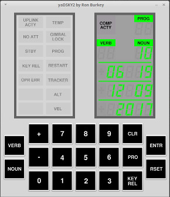

| This page is new and is under
development so don't expect much yet. |
Contents
Introduction
The home page of this website semi-jokingly suggests you might want
to use our AGC+DSKY simulation software to create a clock app for
your computer or perhaps write a calculator
program or tic-tac-toe game using it ... all without giving
you any clues as to how to go about doing such a thing.
It's true that we do have a developer page,
which goes into seemingly-endless though still-incomplete detail
about AGC software from a developer's point of view, but the
developer page is really focused on software developers who might
want to create simulations for Apollo peripherals devices such as
the Alignment Optical Telescope (AOT) or the Inertial Measurement
Unit (IMU) that aren't otherwise provided by our Virtual AGC
Project. In other words, the developer page (and most of the
remainder of this website) caters to people who are interested in
simulating the historical Apollo missions or flying hypothetical
Apollo missions as accurately as possible, and who want to enrich
that experience by creating ever-more-faithful bits and pieces of
the simulation.
But what if you simply want to do something fun, but different, with
the AGC+DSKY, perhaps outside the context of simulation within a
spacecraft environment? For example, to display the current
temperature, or GPS data, or as I already said, to make a calculator
program?
Well, there's a variety of ways to go about doing such stuff.
For example, maybe you just want to display this stuff on the DSKY
directly, and not even bother with the AGC at all. If so, I
wish you luck, but am not sympathetic to your plight. The correct
way to go about it, in my oh-so-not-humble opinion, is to write
actual AGC software that does whatever you need done, and let the
simulated AGC display whatever you need on the DSKY. :-)
That way, you not only end up with a clock or a calculator or a game
or whatever, but you've also learned something about what it was
like as an AGC programmer from the Apollo era, and have
developed some AGC-programmer street-creds (as if there were such a
thing). Now, that's a hobbyist project!
This is a particularly apropos topic for anybody who has purchased a
functional AGC+DSKY replica, such as one
of those sold on eBay by Sam Ammons. It's all very well
that you now have a working AGC plus DSKY-lookalike that can run
(say) the Apollo 11 LM AGC software, but you don't have a LM flying
in space, do you? So what good does it do you (other than
being immensely cool)? Naturally, you want to justify your
purchase by making it do something else too, and to amaze
your geekish friends! Well, making your own custom AGC
software is a way to do that. Since the particular
3D-printed DSKY mentioned happens to contain a Raspberry Pi running
our very-own Virtual AGC software, we're actually in a good position
to understand how to adapt custom AGC software to it, though you
don't need that specific gadget to take advantage of the info
provided on this page. (Disclaimer: I did
lend my sage advice and some software to the manufacturer of that
device, which is why I know about it, but I derive no financial
benefit from it.)
Basic Facts
At its heart, the AGC is simply a computer, like any other: It
has memory which it can read to or write from for storing variables,
it has memory that it can read from but not write to for storing its
program, and it can execute simple instructions one after the other
at a fixed "clock" rate. It has much less memory and a much
slower clock speed and the instructions are different in detail from
our modern-day computers, but the concept is the same.
Of course, just being able to execute instructions is of very little
value unless you can receive some kind of input from the outside
world and can provide some kind of output to the outside
world. Otherwise, what's the point? In the AGC, all of
this connection to the outside world is provided by "i/o channels",
which are memory-like locations into which the CPU can write data
("output channels") or from which it can read data ("input
channels"). The AGC i/o-channel address space allows for up to
128 distinct i/o channels, the majority of which were not used for
anything in the AGC hardware, and are assigned no specific purpose
by the yaAGC simulation software ... thus, in writing your own AGC
software, you can assign these unused i/o channels whatever function
you like, as long as you have some way to feed data into the input
channels and use the data placed in the output channels.
So the basic steps to writing your own AGC software as follows:
- Decide what special purpose i/o you need to have, other than
those for the DSKY (which will be handled by the existing DSKY
software, of course), and assign channel-numbers to them in the
unused region of the i/o-channel address space.
- Write a program which can feed this special purpose data into
yaAGC (the AGC simulator) or read the special-purpose data from
yaAGC. This is your own special-purpose AGC peripheral
device.
- Write AGC software that provides whatever functionality you
want it to have, using data on these new, special-purpose i/o
channels you've defined, and/or on pre-existing channels like
those for the DSKY.
- Assemble your new AGC software using the yaYUL assembler.
- Simultaneously run yaAGC plus a DSKY-simulation program plus
your new special-purpose peripheral device.
- ...
- Profit!
Actually, I lied in the title of this page and in item #7 of the
list above. There's no profit, unless your own personal
enjoyment and sense of accomplishment counts as profit.
(Prove me wrong!) But the other topics, #1-5, are discussed
further throughout the remainder of this page.
An important thing to know about "embedded programming", of which
AGC software is an example, is that there are two basic varieties
of embedded programming and embedded programmers:
- "Bare-metal" programming — This is where you start from
scratch, often writing the entire program yourself. In
other words, you have a computer with a completely empty memory,
with no program at all, and you write your own! This has
the advantage of being simpler, since you don't have to take all
the time to learn about how to work with all of the quirks in
somebody else's software, and can confine yourself to worrying
about the quirks of the hardware, which are usually
simpler. This is often the approach taken in systems
having extremely limited memory resources or speed, since such
systems often don't have the resources to run software anybody
else wrote anyway. For example, I imagine that most
programming for Arduino
devices is of this kind.
- Programming with an "operating system" — This is where the
system is already running software that provides a lot of useful
services (such a time-keeping functions, file-systems,
networking, and so on), and you are merely providing one small
piece of the system's existing software puzzle and relying on
the operating system for a lot of stuff that would otherwise be
troublesome. This has the advantage, of course, that you
don't have to figure out for yourself how to do some of these
very hard things. This is generally the approach taken in
a system like a Raspberry
Pi, which is very fast and has lots of memory and
peripheral devices. In fact, programming for these devices
is hardly "embedded" programming at all, since it's really just
like programming a desktop computer that has been put into a
very small, cheap box.
The AGC is an odd case, because while it has very, very small
resources (tiny memory, terribly slow), it nevertheless has a
pretty capable operating system written but a bunch of smart
people. We will therefore cover both bare-metal programming
and operating-system-based programming. My advice would be
to start with the former until you're familiar with what you're
doing, and then graduate to the latter if it turns out you need to
do so.
Your Own Peripheral
Devices
The stock version of the AGC simulator program, yaAGC, interacts
with its peripheral devices through what I like to refer to as
"virtual wires". (Some customized versions of yaGC, such as
the one used in NASSP don't use this method, so what I have to say
here won't fully apply to them.) These virtual wires are a
networking socket interface, in which yaAGC acts something like a
network "server", and peripheral devices connect via a networking
socket as "clients". The server (yaAGC) and the peripherals
(such as the DSKY or your own custom peripheral device) exchange
network packets whenever the values of the AGC's i/o channels
change.
Okay, that was a mouthful, and sounds very complex ... but isn't
really, because you don't really need to know about it if you use
the handy-dandy template for creating AGC peripheral devices we
provide. But it was useful background information if you're
too stinkin' proud to use our template, so we had to tell you all
about it anyway. You can find more information about it on our
developer page if you
need to!
As for the peripheral template program, though, it is called
piPeripheral.py and you
can find it in our GitHub repository. As the name
implies, piPeripheral.py is written in the Python 3 language.
Python is a kind of scripting language which does not need to be
compiled, and hence you can change the program and see the effects
immediately. It's available, or already automatically
installed, on Windows, Mac OS X, Linux, and so on.
The piPeripheral.py program is a couple of hundred lines long, and
undoubtedly looks a bit complex if you don't know what you're
looking at. Again, that complexity is an illusion, and there
are only a couple of things you need to know to immediately begin
working with it, if you're lucky enough to already be familiar with
Python. In fact, you only need to look at or modify two of the
program's functions, inputsForAGx and outputFromAGx:
- outputFromAGx(channel,value) — This is a function
which is called automatically whenever an output channel in the
AGC has changed. The channel parameter is the
address of the output channel, in the range 0-127 (0-0177
octal), while value is the new value of that channel,
in the range 0-32767 (0-077777 octal). Your software can
do anything you like with this data. Most channels you
will likely ignore. For example, there's little need to do
anything with data in DSKY channels like 010 (octal), 011, or
013, since the DSKY peripheral will handle those.
- inputsForAGx() — This is a function which is
automatically called periodically (nominally every 50 ms), which
allows you to specify zero or more AGC input channels and values
that are supposed to be written into those channels. How
this decision is made or where the data comes from originally is
entirely up to you. By default, the function simply
returns an empty list (in Python notation []), and so
none of the AGC's input channels are affected. But if the
returned list contains one or more items, then the corresponding
input channels will be changed.
Actually, the values in the list of input channels returned by inputsForAGx()
are something the Python language calls "tuples" or specifically,
3-tuples. Each 3-tuple has, as you may imagine, 3 parts:
( channel, value, mask )
The interpretations of the channel and value
parts are probably obvious. The mask part indicates
which bit positions of the value are valid.
Only the bit positions of value for which the mask
is 1 end up affecting the AGC's input channel, and the bit positions
in the input channel corresponding to 0 in in the mask
remain unchanged. This feature is needed in general because
some input channels have bit-fields controlled by one peripheral
device and other bit-fields controlled by other peripheral devices,
and you don't want a peripheral device to change the wrong
bits. For i/o channels you've defined yourself, of course,
that probably isn't an issue, and the mask could always be
32677 (077777 octal).
For example, in a given periodic call to inputsForAGx(),
you might decide that the lower 3 bits of your custom input channel
045 (octal) need to be changed to 05 (octal), and perhaps that the
entire value of your custom channel 046 needs to be changed to
012345. The list returned by inputsForAGx() would
then be
[ ( 0o45, 0o5, 0o00007), (0o46, 0o12345, 0o77777) ]
Note that in Python 3, octal constants are prefixed by "0o".
As for how to choose good addresses for your own custom i/o
channels, it's probably best to avoid i/o channels already
preassigned by the true AGC hardware and existing AGC mission
software. While I'm not aware of any comprehensive list,
addresses 0o0-0035 and 0o76-0o77 should be regarded as already
allocated by the AGC hardware. In addition to those, the simulated
AGC hardware, yaAGC, has defined various "fictitious i/o ports",
working downward from address 0o177, for its own purposes. So
to summarize all of that, my advice would be to confine any custom
i/o channels you want to assign to the following ranges:
As it happens, the sample peripheral program piPeripheral.py in
our GitHub repository has been pepped up slightly from just a bare
template. Additionally, it defines and processes several new
i/o channels just to give examples of how to do so. This
extra stuff is active only when the command-line switch --time=1
(or actually, --time=anything) is used, so you
can easily eliminate it if you choose to build your own peripheral
device starting from piPeripheral.py. Here's a list of these
newly-assigned channels:
- AGC input channel 0o40 — Packed minutes and seconds of the
current time, with seconds in the least-significant 6 bits and
minutes in the next higher 6 bits.
- AGC input channel 0o41 — Packed month, day, and hours of the
current date and time, with hours being the least-significant 5
bits, day the next higher 5 bits, and month the next higher 4
bits.
- AGC input channel 0o42 — The current year.
- AGC output channel 0o43 — The current year.
- AGC output channel 0o44 — The current month.
- AGC output channel 0o44 — The current day
- AGC output channel 0o44 — The current hour
- AGC output channel 0o44 — The current minute
- AGC output channel 0o44 — The current second
The input channels are actively generated by piPeripheral.py,
while the output channels merely have their contents printed
out. The AGC program processing the input channels (in which
the date and time is packed in a non-human-friendly way) might
use the output channels for reporting human-friendly unpacked date
& time data. Of course, the AGC program might choose to
do something else altogether or even nothing at all with these
extra channels.
And of course, the main idea behind providing the current time
and date in this way in the first place, is that it might serve as
the basis for using the AGC+DSKY as a clock widget on a computer
desktop. That's because we really mean the current
time, and we don't mean something like "time since powerup", which
is otherwise all that the AGC knows about on its own. This
idea of a clock app is continued in the next section.
Bare-Metal Programming
Alas! there's nothing akin to a higher-level language such a C or
Python for the AGC. Thus, programming the AGC is ultimately an
exercise in assembly-language programming, and specifically
in the assembly language that's unique to the "Block 2" AGC.
This is covered in more detail than many mortals would like on our Block 2 AGC Language page,
so to start out, you'll either want to look that over, or at least
to look over the concise "AGC4
Memo #9" from which a lot of the information on that page
comes. If you're not already somewhat-familiar with
assembly-language programming in general, I won't pretend this will
be easy for you. On the other hand, if you do have any
previous familiarity with assembly language, all you'll really need
to worry about is internalizing the AGC's unique non-contiguous
memory map and register set, and getting an overview of the
instruction set.
Other than what I mentioned just now, the first important thing to
know is that your AGC program will begin executing at address 04000
(octal), which could look like this in assembly language:
SETLOC 4000
STARTUP # Do your own stuff from here on
But that's a bit of an over-simplification. The actual
significance of address 04000 is that it's the start of an interrupt-vector
table — i.e., of code which is instantly automatically
executed whenever certain exceptional conditions occurs. For
example, if the DSKY sends the AGC a keystroke, it instantly
"vectors" to the code that's associated with that condition, and
it's not something that your AGC program necessarily has to
explicitly check for.
There are actually 11 different interrupt sources in the AGC,
including power-up, and each of those interrupt-sources has 4 words
allocated for it in the interrupt-vector table at address 04000, and
you can
read about them here. You can't just ignore them, even
if you think you don't need them for anything, because you still
have to worry about what happens if one of those interrupts occurs:
you can't have the code just suddenly vector off into the middle of
nowhere! So a minimal version of the code above that accounts
for the full interrupt table might look like so:
SETLOC 4000
TCF STARTUP
NOOP
NOOP
NOOP
RESUME # T6RUPT
NOOP
NOOP
NOOP
RESUME # T5RUPT
NOOP
NOOP
NOOP
RESUME # T3RUPT
NOOP
NOOP
NOOP
RESUME # T4RUPT
NOOP
NOOP
NOOP
RESUME # KEYRUPT1
NOOP
NOOP
NOOP
RESUME # KEYRUPT2
NOOP
NOOP
NOOP
RESUME # UPRUPT
NOOP
NOOP
NOOP
RESUME # DOWNRUPT
NOOP
NOOP
NOOP
RESUME # RADAR RUPT
NOOP
NOOP
NOOP
RESUME # RUPT10
NOOP
NOOP
NOOP
STARTUP # Do your own stuff from
here on!
Even here, we're still simplifying a bit, since what you'd find if
you started filling in code after the label STARTUP is
that your code might execute for a while and then just reset and
start again at address 04000! What's up with that? Well,
behind the scenes, the AGC hardware checks performs various checks
to determine if the computer has somehow frozen up, and of course,
yaAGC tries to perform whichever of those checks are appropriate as
well. If it detects any of these conditions, it performs a
jump to address 04000, just as if a power-up had occurred.
That's one of the features that lends reliability to the
device. This restart is known as a GOJAM. I'm not
totally sure what all of the conditions that could trigger a GOJAM
are, but LUMINARY
Memo #225 contains a handy list of 8 of them. The ones
that are relevant to software that you yourself write are these:
- Night Watchman — this expects a specific memory location
(address 067 octal, usually labeled as NEWJOB) to be
tested every so often. If NEWJOB isn't tested at
reasonable intervals, then a GOJAM occurs. (In normal
mission software, NEWJOB is a variable that relates to
loading jobs into the "executive", and thus it's reasonable to
expect it not to be ignored by the software.) Thus, you
need to have some code that periodically reads this location,
such as a CS NEWJOB instruction.
- RUPTLOCK — this check guards against interrupts being disabled
for too long a period of time, or else for an interrupt service
routine taking too long before executing its RESUME
instruction to return to the main code. Thus, you must
make sure that interrupts are usually enabled (and don't occur
too often or take too long when they do).
- TC TRAP — this check guards against infinite loops of the form
TC SELF. So if your AGC program actually has an
end point after which it has finished up all of its work, it
best to end it up with something more complex than an
instruction to just keep looping at the same address.
Taking all of that into consideration, here's a minimal framework
you might use to start building your bare-metal AGC program:
# Definitions of various registers.
ARUPT
EQUALS 10
QRUPT
EQUALS 12
TIME3 EQUALS
26
NEWJOB EQUALS
67 # Location
checked by the Night Watchman.
SETLOC 4000
# The interrupt-vector table.
#
Come here at power-up or GOJAM
INHINT
# Disable interrupts for a moment.
# Set
up the TIME3 interrupt, T3RUPT. TIME3 is a 15-bit
#
register at address 026, which automatically increments every
# 10
ms, and a T3RUPT interrupt occurs when the timer
#
overflows. Thus if it is initially loaded with 037774,
# and
overflows when it hits 040000, then it will
#
interrupt after 40 ms.
CA O37774
TS TIME3
TCF STARTUP #
Go to your "real" code.
RESUME # T6RUPT
NOOP
NOOP
NOOP
RESUME # T5RUPT
NOOP
NOOP
NOOP
DXCH ARUPT
# T3RUPT
EXTEND
# Back up A, L, and Q
registers
QXCH QRUPT
TCF
T3RUPT
RESUME # T4RUPT
NOOP
NOOP
NOOP
RESUME # KEYRUPT1
NOOP
NOOP
NOOP
RESUME # KEYRUPT2
NOOP
NOOP
NOOP
RESUME # UPRUPT
NOOP
NOOP
NOOP
RESUME # DOWNRUPT
NOOP
NOOP
NOOP
RESUME # RADAR RUPT
NOOP
NOOP
NOOP
RESUME # RUPT10
NOOP
NOOP
NOOP
# The interrupt-service routine for the TIME3 interrupt every
40 ms.
T3RUPT CAF
O37774 # Schedule another TIME3
interrupt in 40 ms.
TS TIME3
#
Tickle NEWJOB to keep Night Watchman GOJAMs from happening.
# You
normally would NOT do this kind of thing in an
interrupt-service
#
routine, because it would actually prevent you from detecting
#
true misbehavior in the main program. If you're
concerned about
#
that, just comment out the next instruction and instead
sprinkle
#
your main code with "CS NEWJOB" instructions at strategic
points.
CS NEWJOB
#
If you want to build in your own behavior, do it right here!
#
And resume the main program
DXCH
ARUPT # Restore A, L, and
Q, and exit the interrupt
EXTEND
QXCH QRUPT
RESUME
STARTUP
RELINT # Reenable interrupts.
#
Do your own stuff here!
#
If you're all done, a nice but complex infinite loop that
#
won't trigger a TC TRAP GOJAM.
ALLDONE
CS NEWJOB
# Tickle the Night Watchman
TCF ALLDONE
# Define any constants that are needed.
O37774
OCT 37774
So here you have simple framework with a few empty places in
which to insert your own code. Not to mention a few
interrupt vectors (such as the DSKY keypad interrupts, KEYRUPT1
and KEYRUPT2) that right now do nothing, but which you could
imagine might be very helpful.
What might the functionality for reading DSKY keystrokes look
like? Note that info about the i/o
channels pertaining to the DSKY are on the developer page.
Perhaps you'd use the KEYRUPT1 interrupt-service routine to read
the input channel containing the DSKY keycode, and then store that
keycode in a variable. Your main program loop might
periodically check that variable to see it it contains anything,
and then might output something to the DSKY so you'd know it had
been detected. For example, it might toggle the DSKY's COMP
ACTY lamp every time there was a new keycode detected.
# Here's what the allocation of the variable to hold the
keycode might look like.
# Plus, a variable that tells if COMP ACTY is currently on or
off.
SETLOC 68
KEYBUF ERASE
# 040
when empty, 0-037 when holding a code
CASTATUS ERASE
# 0
if COMP ACTY off, 2 if on.
.
.
.
# Here's what the KEYRUPT1 interrupt-vector table entry
might look like.
DXCH ARUPT
# KEYRUPT1
EXTEND
# Back up A, L, and Q
registers
QXCH QRUPT
TCF
KEYRUPT1
.
.
.
# Here's what the actual interrupt-service code might look
like.
KEYRUPT1 EXTEND
READ 15
# Read the DSKY keycode input
channel
MASK O37
# Get rid of all but lowest 5
bits.
TS
KEYBUF # save the keycode for
later.
DXCH
ARUPT # Restore A,
L, and Q, and exit the interrupt
EXTEND
QXCH QRUPT
RESUME
.
.
.
# Here's what it might look like in the main code.
STARTUP RELINT
#
Initialization
CA
NOKEY # Clear the
keypad buffer variable
TS
KEYBUF # to initially
hold an illegal keycode.
CA ZERO
TS CASTATUS
.
.
.
#
Occasionally check if there's a keycode ready, and toggle
#
DSKY COMP ACTY if there is. Presumably this is inside of
a
#
loop.
CA NOKEY
EXTEND
SU
KEYBUF # Acc will now be
zero if no key, non-zero otherwise
EXTEND
BZF EMPTY
CA NOKEY
TS
KEYBUF # Mark keycode
buffer as empty.
CA
CASTATUS # Toggle COMP ACTY.
EXTEND
BZF CAOFF
CA ZERO
TCF CATOGGLE
CAOFF CA
TWO
CATOGGLE
TS CASTATUS
EXTEND
WRITE 11
# Write to the DSKY
lamps
EMPTY NOOP
.
.
.
# Constants
ZERO
OCT 0
TWO
OCT 2
O37
OCT 37
# Mask with lowest 5
bits set.
NOKEY
OCT 40
With this, you actually have an AGC program that
does something, and does it both visibly and testably ... if not
very excitingly.
A slightly sleeker form of this code, called piPeripheral.agc,
which can be assembled with yaYUL and actually works if it is
run in the AGC simulator, can be found in our GitHub repository.
Actually, the code in GitHub is not merely a cleaned-up
form of the code above, but in fact implements processing of the
current-timestamp information the sample peripheral program
piPeripheral.py provides in the newly-minted AGC input channels
040-042. (See the end of the preceding section.) What
piPeripheral.agc does with that information (which is a packed
form of the date and time) is to:
- Unpack the data into separate year, month, day, hour, minute,
and second fields.
- Output the unpacked data fields in the newly-allocated AGC
output channels 043-050.
- Display the data on the DSKY.
You can actually see what this looks like on a simulated DSKY in
the picture to right. What you see there is:
- The year (2017) in DSKY register R3 (the bottom 5-digit area).
- The month (12) and the day (09) in DSKY register R2.
- The hour (06) and minute (19) in DSKY register R1.
- The seconds (10) in the NOUN area.
The piPeripheral.py program will have generated this data
according to the preference settings on the compuer on which
you're running it, which in my case is the U.S. CST time-zone ...
so yes, I was doing this at around 6 in the morning, local time,
on a Saturday. Yawn! I should be paid more (than the
$0 I currently get) for doing this lousy job. :-)
At any rate, assuming one has written such a custom AGC program,
a necessary step before being able to run it in the AGC simulator
is to assemble it with the yaYUL assembler. Exactly how to
find the assembler depends on the particular setup being used, but
assuming you can find it (or better yet, have it in the "PATH"),
assembly is a snap. But suppose, for example, that you
simply want to assemble piPeripheral.agc; assuming you've retained
the same directory setup as in GitHub, and have built the normal
Virtual AGC software too, you could do something like the
following without having to worry about path settings:
cd virtualagc/piPeripheral
../yaYUL/yaYUL piPeripheral.agc
The result (if there were no errors, and hopefully there wouldn't be
for an unmodified piPeripheral.agc) would be the executable file
piPeripheral.agc.bin. If there were assembly errors such as
syntax problems or unallocated variables, of course, then you have
to fix them ... a topic on which it's difficult to offer any general
advice other than to start with a small program that assembles
perfectly and slowly work towards having a larger program.
Once the program is assembled, it can be run in the AGC
simulator. This is again a tricky topic, since there are a
variety of ways in which it can be done, and a variety of possible
system configurations. What you would do on a desktop PC is
undoubtedly not the same thing you'd do on the 3D-printed DSKY
mentioned earlier. However, to just do it from a command
line within our software tree as downloaded from GitHub and
successfully built from source, in Linux you could do the
following.
# Start up the AGC simulator with the custom AGC program,
in the background, and discard all messages from it.
cd virtualagc/yaAGC
./yaAGC --core="../piPeripheral/piPeripheral.agc.bin"
--port=19697 --cfg="../yaDSKY/src/LM.ini" &>/dev/null
&
# Start up the DSKY simulator in the background and discard
all messages from it.
cd ../yaDSKY2
./yaDSKY2 --cfg="../yaDSKY/src/LM.ini" --port=19698
&>/dev/null &
# Start up the custom peripheral device, in the foreground,
and don't discard its messages. You might need
# to install some extra Python modules, such as "sudo pip3
install argparse", if this fails.
cd ../piPeripheral
./piPeripheral.py --port=19699 --time=1
# Now that the custom peripheral has been terminated, clean up
the other programs we've started.
killall yaAGC yaDSKY2
On Mac OS, I think it would be a bit trickier than what I'm
written, since I don't think that yaDSKY2 as started this way
would actually accept any keypress events; I'm not sure quite how
to do it properly, though. On Windows, you would have to use
backslashes ('\') in places of the forward slashes if used here
('/'); also, I don't know that using '&' to put the programs
into the background would work, or that "killall" would be
available for killing those programs afterward, so you might want
to run the various programs all in the foreground, in separate
command-line consoles. But obviously, there's a way to do
it, even if I'm too personally lazy to figure it out just
yet. If anyone just wants to inform me of the correct
detailed way of doing things on Mac OS X or Windows, I'd be happy
to include that info here.
Programming for
the AGC "Operating System"
After one is comfortable with writing simple, bare-metal AGC
applications as described in the preceding section, presumably one
might want to graduate to producing more-complex AGC
applications. For example, the bare-metal example doesn't
allow you to use multi-tasking, nor to use the PROG/VERB/NOUN
user-interface style, nor to use the various types of monitoring
associated with the VERB/NOUN system, and so on. Admittedly,
if you were sufficiently enthusiastic you might write all of the
code to do that, though it might take quite a bit of effort and
time.
Alternatively, you could just use those features as-is, since they
already exist within the existing AGC mission code.
Unfortunately, as far as I know, nobody has taken the effort to
extract just the "operating system" content of the AGC mission code,
as devoid from the various "programs" that run under that operating
system. Actually, to be fair, it has been done, but only with
Block 1 AGC code using an incompatible assembler, so it's not
immediately useful. But with Block 2 code, no. It would
be cool, but I'm too lazy to do it. (Anyone who wants to do it
and send me a set of files that actually assembles and runs without
error, please do so!)
Lacking that, one could simply clone the code for an existing
mission and try to adapt that. Unfortunately, perhaps, the
existing mission code tends to be big and to fill most of available
memory, making it difficult to fit in any new code. The trick
to getting around that is to recognize a) that the mission code grew
over time and that b) the "operating system" portions of the
software were relatively stable pretty early. Thus if we
choose a very early version of the Apollo-era AGC code to work from,
we should have a fairly stable operating system with lots of free
memory. And, of course, it would presumably be easier to strip
unwanted programs out of an early (relatively feature-lacking)
version of the code than out of a later one.
The existing AGC code which seems to fit the bill is RETREAD
44, which does not even use a third of the fixed program
memory.
As for how to write your program in such a way as to take advantage
of the operating system ... TBD
Assembling and running the code is the same as the steps provided at
the end of the preceding section on bare-metal programming, though
obviously the name and storage location of the AGC code changes.
This page is available under the Creative
Commons No Rights Reserved License
Last modified by Ronald Burkey on
2017-12-09.